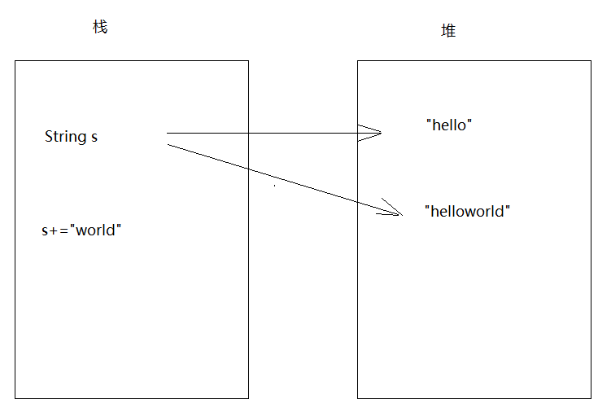
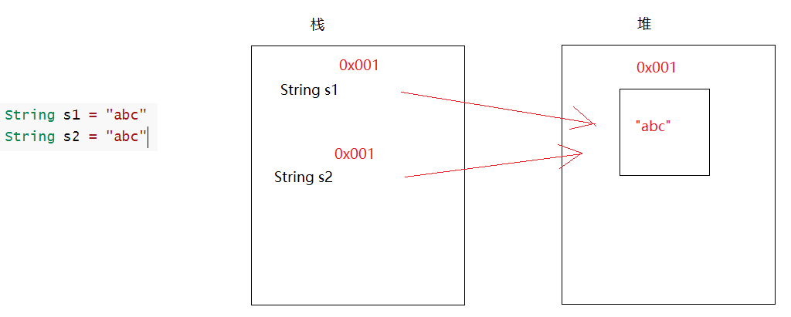
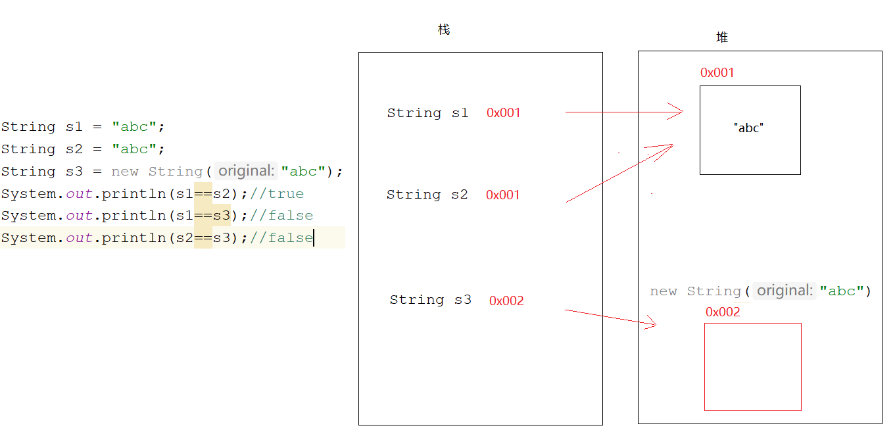
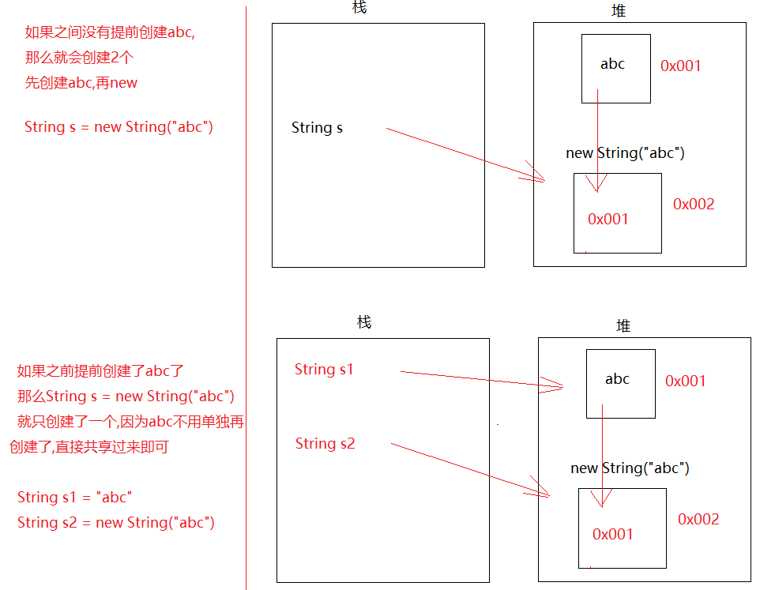
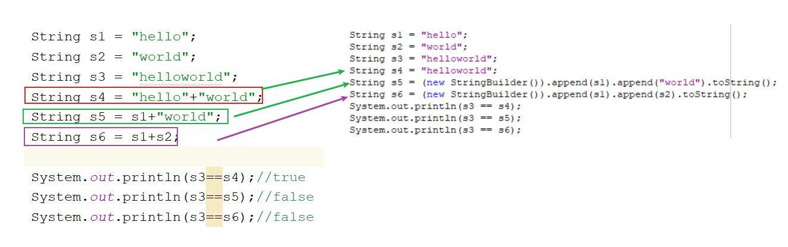

来源：用户提供的 笔记(1).zip / 03_笔记/模块14_API/模块14.基础API.md。保留原课程内容，历史环境、示例错误和故意报错的教学代码应结合上下文阅读。
模块14.基础API
java
模块13回顾:
1.异常:
a.分类:Throwable
Error:错误
Exception:异常
编译时期异常:一编译,就爆红(主要还是调用了某个方法,某个方法底层抛了一个编译时期异常)
Exception以及子类(除了RuntimeException之外)
运行时期异常:一运行就报错
RuntimeException以及子类
2.异常处理:
throws
try...catch
3.finally:不管是否有异常都会执行的代码,要配合try...catch使用
finally的使用场景:关闭资源使用
4.自定义异常:
a.定义一个类,继承Excption,变成了编译时期异常
继承RuntimeException,变成了运行时期异常
b.提供构造方法,便于设置异常信息
5.Object:所有类的根类,任何类都会直接或者间接继承Object类
a.toString方法:
没有重写,直接输出对象名,调用的是Object中的toString方法,输出地址值
重写了,直接输出对象名,默认调用重写的toString方法,输出对象内容
b.equals方法:
没有重写,比较对象地址值
重写了,比较对象内容
c.clone方法:需要实现Cloneable接口,重写clone方法
复制一个地址值不一样,属性值一样的对象
6.经典接口:
Comparable
Comparator
模块14重点:
all
第一章.String
1.String介绍
java
1.概述:String 类代表字符串
2.特点:
a.Java 程序中的所有字符串字面值（如 "abc" ）都作为此类的实例(对象)实现
凡是带双引号的,都是String的对象
String s = "abc"
"abc"就是对象;String就是对象的数据类型;s就是对象名
b.字符串是常量,它们的值在创建之后不能更改
String s = "hello"
s+="world" -> 会产生新对象
c.String 对象是不可变的，所以可以共享
String s1 = "abc"
String s2 = "abc"


2.String的实现原理
java
1.jdk8的时候:String底层是一个被final修饰的char数组-> private final char[] value;
2.jdk9开始到之后:底层是一个被final修饰的byte数组-> private final byte[] value;
一个char类型占2个字节
一个byte类型占1个字节 -> 省内存空间
java
字符串定义完之后,数组就创建好了,被final一修饰,数组的地址值直接定死
3.String的创建
java
1.String() -> 利用String的无参构造创建String对象
2.String(String original) -> 根据字符串创建String对象
3.String(char[] value) -> 根据char数组创建String对象
4.String(byte[] bytes) -> 通过使用平台的默认字符集解码指定的 byte 数组，构造一个新的 String
a.平台:操作系统
b.操作系统默认字符集:GBK
GBK:一个中文占2个字节
UTF-8:一个中文占3个字节
而且,中文对应的字节一般都是负数
代码在idea中写的,idea启动的时候,会自动加一个启动参数,此启动参数为UTF-8
-Dfile.encoding=UTF-8
5.简化形式:
String 变量名 = ""
java
public class Demo02String {
public static void main(String[] args) {
//1.String() -> 利用String的无参构造创建String对象
String s1 = new String(); //
System.out.println(s1);
//2.String(String original) -> 根据字符串创建String对象
String s2 = new String("abc");
System.out.println(s2);
//3.String(char[] value) -> 根据char数组创建String对象
char[] chars = {'a','b','c'};
String s3 = new String(chars);
System.out.println(s3);
/*
4.String(byte[] bytes) -> 通过使用平台的默认字符集解码指定的 byte 数组，
构造一个新的 String
*/
byte[] bytes1 = {97,98,99};
String s4 = new String(bytes1);
System.out.println(s4);
byte[] bytes2 = {-97,-98,-99};
String s5 = new String(bytes2);
System.out.println(s5);
byte[] bytes3 = {-28,-67,-96};
String s6 = new String(bytes3);
System.out.println(s6);
//5.简化形式
String s7 = "abc";
System.out.println(s7);
}
}
java
1.String(char[] value, int offset, int count)->将char数组的一部分转成String对象
value:要转String的char数组
offset:从数组的哪个索引开始转
count:转多少个
2.String(byte[] bytes, int offset, int length)->将byte数组的一部分转成String对象
bytes:要转String的byte数组
offset:从数组的哪个索引开始转
length:转多少个
java
public class Demo03String {
public static void main(String[] args) {
/* 1.String(char[] value, int offset, int count)->将char数组的一部分转成String对象
value:要转String的char数组
offset:从数组的哪个索引开始转
count:转多少个*/
char[] chars = {'a','b','c','d','e','f'};
String s1 = new String(chars,1,3);
System.out.println(s1);
/* 2.String(byte[] bytes, int offset, int length)->将byte数组的一部分转成String对象
bytes:要转String的byte数组
offset:从数组的哪个索引开始转
length:转多少个*/
byte[] bytes = {97,98,99,100,101};
String s2 = new String(bytes,0,2);
System.out.println(s2);
}
}
4.String 面试题
java
public class Demo04String {
public static void main(String[] args) {
String s1 = "abc";
String s2 = "abc";
String s3 = new String("abc");
System.out.println(s1==s2);//true
System.out.println(s1==s3);//false
System.out.println(s2==s3);//false
}
}

java
问1:String s = new String("abc")共有几个对象? 2个
一个new本身 一个是"abc"
问2:String s = new String("abc")共创建了几个对象? 1个或者2个
就看abc有没有提前创建出来了


5.字符串常见问题
Java
public class Demo05String {
public static void main(String[] args) {
String s1 = "hello";
String s2 = "world";
String s3 = "helloworld";
String s4 = "hello"+"world";
String s5 = s1+"world";
String s6 = s1+s2;
System.out.println(s3==s4);//true
System.out.println(s3==s5);//false
System.out.println(s3==s6);//false
}
}
1.字符串拼接,如果等号右边是字符串字面值拼接,不会产生新对象
2.字符串拼接,如果等号右边有变量参数拼接,会产生新字符串对象
第二章.String的方法
1.判断方法
java
boolean equals(String s) -> 比较字符串内容
boolean equalsIgnoreCase(String s) -> 比较字符串内容,忽略大小写
java
public class Demo01String {
public static void main(String[] args) {
String s1 = "abc";
String s2 = new String("abc");
String s3 = "Abc";
System.out.println(s1==s2);//比较地址值了
//boolean equals(String s) -> 比较字符串内容
System.out.println(s1.equals(s2));
//boolean equalsIgnoreCase(String s) -> 比较字符串内容,忽略大小写
System.out.println(s1.equalsIgnoreCase(s3));
System.out.println("=========================");
String s4 = "123";
String s5 = "一二三";
System.out.println(s4.equalsIgnoreCase(s5));//false
String s6 = "壹贰叁";
System.out.println(s5.equalsIgnoreCase(s6));//false
}
}
2.练习1
java
已知用户名和密码，请用程序实现模拟用户登录。总共给三次机会，登录成功与否，给出相应的提示
步骤:
1.先定义两个字符串,表示注册过的用户名和密码
2.创建Scanner对象,键盘录入用户名和密码
3.比较,如果输入的用户名和密码跟已经注册过的用户名和密码内容一样,就登录成功,否则就登录失败
java
public class Demo02String {
public static void main(String[] args) {
//1.先定义两个字符串,表示注册过的用户名和密码
String username = "root";
String password = "123";
//2.创建Scanner对象,键盘录入用户名和密码
Scanner sc = new Scanner(System.in);
for (int i = 0; i < 3; i++) {
System.out.println("请您输入用户名:");
String name = sc.next();
System.out.println("请您输入密码:");
String pwd = sc.next();
//3.比较,如果输入的用户名和密码跟已经注册过的用户名和密码内容一样,就登录成功,否则就登录失败
if (name.equals(username) && pwd.equals(password)) {
System.out.println("登录成功");
break;
} else {
if (i == 2) {
System.out.println("账号冻结");
} else {
System.out.println("登录失败!");
}
}
}
}
}
javapackage com.atguigu.b_stringmethod; import java.util.Objects; public class Demo03String { public static void main(String[] args) { //String s = "abc"; String s = null; //method(s); String s1 = null; String s2 = "abc"; method01(s1,s2); } /* 工具类:Objects 方法:判断两个对象是否相等 -> 自带防空指针作用 public static boolean equals(Object a, Object b) { return (a == b) || (a != null && a.equals(b)); } */ private static void method01(String s1, String s2) { if (Objects.equals(s1,s2)){ System.out.println("是abc"); }else{ System.out.println("不是abc"); } } /* 如果传递过来的对象是null,再去点其他方法,就会空指针 解决:不要让一个字符串变量去点,用确定的字符串去点,可以防空 */ private static void method(String s) { /*if (s.equals("abc")){ System.out.println("是abc"); }else{ System.out.println("不是abc"); }*/ if ("abc".equals(s)){ System.out.println("是abc"); }else{ System.out.println("不是abc"); } } }
3.获取功能
java
int length() -> 获取字符串长度
String concat(String s)-> 字符串拼接,返回新串儿
char charAt(int index) -> 根据索引获取对应的字符
int indexOf(String s) -> 获取指定字符串在大字符串中第一次出现的索引位置
String subString(int beginIndex) -> 截取字符串,从指定索引开始截取到最后,返回新串儿
String subString(int beginIndex,int endIndex) -> 截取字符串,从beginIndex开始到endIndex结束
含头不含尾,返回新串儿
java
public class Demo04String {
public static void main(String[] args) {
String s1 = "abcdefg";
//int length() -> 获取字符串长度
System.out.println(s1.length());
//String concat(String s)-> 字符串拼接,返回新串儿
System.out.println(s1.concat("haha"));
//char charAt(int index) -> 根据索引获取对应的字符
System.out.println(s1.charAt(0));
//int indexOf(String s) -> 获取指定字符串在大字符串中第一次出现的索引位置
System.out.println(s1.indexOf("a"));
//String subString(int beginIndex) -> 截取字符串,从指定索引开始截取到最后,返回新串儿
System.out.println(s1.substring(3));
//String subString(int beginIndex,int endIndex) -> 截取字符串,从beginIndex开始到endIndex结束
//含头不含尾,返回新串儿
System.out.println(s1.substring(1,6));
}
}
4.练习2
java
遍历字符串
java
public class Demo05String {
public static void main(String[] args) {
String s = "abcdefg";
for (int i = 0; i < s.length(); i++) {
System.out.println(s.charAt(i));
}
}
}
5.转换功能
java
1.char[] toCharArray() -> 将字符串转成char数组
2.byte[] getBytes() -> 将字符串转成byte数组
3.String replace(CharSequence c1,CharSequence c2)-> 替换字符
CharSequence->String的接口
4.byte[] getBytes(String charsetName) -> 按照指定的编码将字符串转成byte数组
java
public class Demo06String {
public static void main(String[] args) throws UnsupportedEncodingException {
String s = "abcdefg";
//1.char[] toCharArray() -> 将字符串转成char数组
char[] chars = s.toCharArray();
for (int i = 0; i < chars.length; i++) {
System.out.println(chars[i]);
}
System.out.println("===============");
//2.byte[] getBytes() -> 将字符串转成byte数组
byte[] bytes = s.getBytes();
for (int i = 0; i < bytes.length; i++) {
System.out.println(bytes[i]);
}
System.out.println("===============");
//3.String replace(CharSequence c1,CharSequence c2)-> 替换字符 CharSequence->String的接口
System.out.println(s.replace("a","z"));
System.out.println("===============");
//4.byte[] getBytes(String charsetName) -> 按照指定的编码将字符串转成byte数组
byte[] bytes1 = "你好".getBytes("GBK");
for (int i = 0; i < bytes1.length; i++) {
System.out.println(bytes1[i]);
}
}
}
7.练习4
java
键盘录入一个字符串，统计该字符串中大写字母字符，小写字母字符，数字字符出现的次数(不考虑其他字符)
步骤:
1.创建Scanner对象,键盘录入
2.定义三个变量,用来统计
3.调用next方法录入一个字符串,遍历字符串,将每一个字符拿出来
4.统计大写字母
A-Z -> 65-90
比如:B -> 66 -> 在65-90之间,证明就是大写字母
5.统计小写字母
a-z -> 97-122
比如:b -> 98 -> 在97-122之间,证明就是小写字母
6.统计数字:
0-9 -> 48-57
比如:字符1 -> 49 -> 在48-57之间,证明就是数字
7.将统计结果打印出来
java
public class Demo07String {
public static void main(String[] args) {
//1.创建Scanner对象,键盘录入
Scanner sc = new Scanner(System.in);
//2.定义三个变量,用来统计
int big = 0;
int small = 0;
int number = 0;
//3.调用next方法录入一个字符串,遍历字符串,将每一个字符拿出来
String data = sc.next();
char[] chars = data.toCharArray();
for (int i = 0; i < chars.length; i++) {
char num = chars[i];
/*4.统计大写字母
A-Z -> 65-90
比如:B -> 66 -> 在65-90之间,证明就是大写字母*/
if (num>='A' && num<='Z'){
big++;
}
/*5.统计小写字母
a-z -> 97-122
比如:b -> 98 -> 在97-122之间,证明就是小写字母*/
if (num>='a' && num<='z'){
small++;
}
/*6.统计数字:
0-9 -> 48-57
比如:字符1 -> 49 -> 在48-57之间,证明就是数字*/
if (num>='0' && num<='9'){
number++;
}
}
//7.将统计结果打印出来
System.out.println("大写有"+big+"个");
System.out.println("小写有"+small+"个");
System.out.println("数字有"+number+"个");
}
}
8.分割功能
java
1.String[] split(String regex)->按照指定的规则分割字符串
注意:regex写的是正则表达式 -> . 在正则表达式中代表任意一个字符
java
public class Demo08String {
public static void main(String[] args) {
String s = "abc,txt";
String[] split = s.split(",");
for (int i = 0; i < split.length; i++) {
System.out.println(split[i]);
}
System.out.println("===============");
String s2 = "haha.hehe";
String[] split1 = s2.split("\\.");
for (int i = 0; i < split1.length; i++) {
System.out.println(split1[i]);
}
}
}
第三章.其他方法
java
1.boolean contains(String s) -> 判断老串儿中是否包含指定的串儿
2.boolean endsWith(String s) -> 判断老串儿是否以指定的串儿结尾
3.boolean startsWith(String s) -> 判断老串儿是否以指定的串儿开头
4.String toLowerCase()-> 将字母转成小写
5.String toUpperCase() -> 将字母转成大写
6.String trim() -> 去掉字符串两端空格
java
public class Demo09String {
public static void main(String[] args) {
String s = "abcdefg";
//1.boolean contains(String s) -> 判断老串儿中是否包含指定的串儿
System.out.println(s.contains("a"));
//2.boolean endsWith(String s) -> 判断老串儿是否以指定的串儿结尾
System.out.println(s.endsWith("g"));
//3.boolean startsWith(String s) -> 判断老串儿是否以指定的串儿开头
System.out.println(s.startsWith("a"));
//4.String toLowerCase()-> 将字母转成小写
System.out.println("ADbcda".toLowerCase());
//5.String toUpperCase() -> 将字母转成大写
System.out.println("dafadRWERW".toUpperCase());
//6.String trim() -> 去掉字符串两端空格
System.out.println(" hadfhad hdsfha sfhdsh ".trim());
System.out.println("==================");
System.out.println(" hadfhad hdsfha sfhdsh ".replace(" ",""));
}
}
第四章.StringBuilder类
1.StringBuilder的介绍
java
1.概述:一个可变的字符序列,此类提供了一个与StringBuffer兼容的一套API,但是不保证同步(线程不安全,效率高)
2.作用:主要是字符串拼接
3.问题:
a.刚讲完String,String也能做字符串拼接,直接用+即可,但是为啥还要用StringBuilder去拼接呢?
b.原因:
String每拼接一次,就会产生新的字符串对象,就会在堆内存中开辟新的空间,如果拼接次数多了,会占用内存,效率比较底
StringBuilder,底层自带一个缓冲区(没有被final修饰的byte数组)拼接字符串之后都会在此缓冲区中保存,在拼接的过程中,不会随意产生新对象,节省内存
4.StringBuilder的特点:
a.底层自带缓冲区,此缓冲区是没有被final修饰的byte数组,默认长度为16
b.如果超出了数组长度,数组会自动扩容
创建一个新长度的新数组,将老数组的元素复制到新数组中,然后将新数组的地址值重新赋值给老数组
c.默认每次扩容老数组的2倍+2
如果一次性添加的数据超出了默认的扩容数组长度(2倍+2),比如存了36个字符,超出了第一次扩容的34,就按照实际数据个数为准,就是以36扩容
2.StringBuilder的使用
java
1.构造:
StringBuilder()
StringBuilder(String str)
java
public class Demo01StringBuilder {
public static void main(String[] args) {
StringBuilder sb = new StringBuilder();
System.out.println(sb);
StringBuilder sb1 = new StringBuilder("abc");
System.out.println(sb1);
}
}
java
常用方法:
StringBuilder append(任意类型数据) -> 字符串拼接,返回的是StringBuilder自己
StringBuilder reverse()-> 字符串翻转,返回的是StringBuilder自己
String toString() -> 将StringBuilder转成String-> 用StringBuilder拼接字符串是为了效率,为了不占内存,那么拼完之后我们后续可能会对拼接好的字符串进行处理,就需要调用String中的方法,所以需要将StringBuilder转成String
java
public class Demo02StringBuilder {
public static void main(String[] args) {
StringBuilder sb = new StringBuilder();
StringBuilder sb1 = sb.append("张无忌");
System.out.println(sb1);
System.out.println(sb);
System.out.println(sb==sb1);
System.out.println("==============");
//链式调用
sb.append("赵敏").append("周芷若").append("小昭");
System.out.println(sb);
sb.reverse();
System.out.println(sb);
String s = sb.toString();
System.out.println(s);
}
}
java
练习:键盘录入一个字符串,判断此字符串是否为"回文内容"
比如: abcba 上海自来水来自海上
java
public class Demo03StringBuilder {
public static void main(String[] args) {
//1.创建Scanner对象
Scanner sc = new Scanner(System.in);
String data = sc.next();
//2.创建StringBuilder对象
StringBuilder sb = new StringBuilder(data);
//3.翻转
sb.reverse();
//4.将StringBuilder转成String
String s = sb.toString();
if (data.equals(s)){
System.out.println("是回文内容");
}else{
System.out.println("不是回文内容");
}
}
}
3.练习
java
定义一个数组,以[元素1, 元素2, 元素3..]的形式输出,用StringBuilder拼接
java
自己做
String:拼接字符串效率低,每拼接一次,都会产生一个新的字符串对象,耗费内存资源
StringBuilder和StringBuffer区别:
a.相同点:
用法一样,作用一样
b.不同点:
StringBuilder:拼接效率比StringBuffer高
线程不安全
StringBuffer:效率比较底,线程安全
拼接效率:StringBuilder>StringBuffer>String